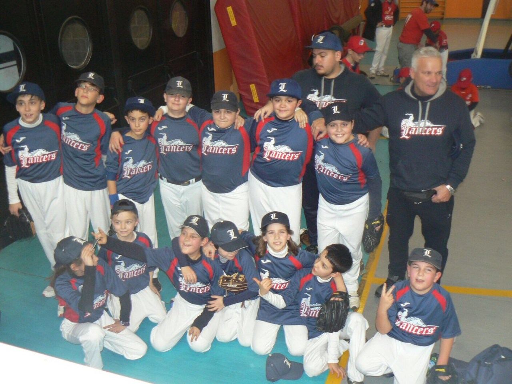
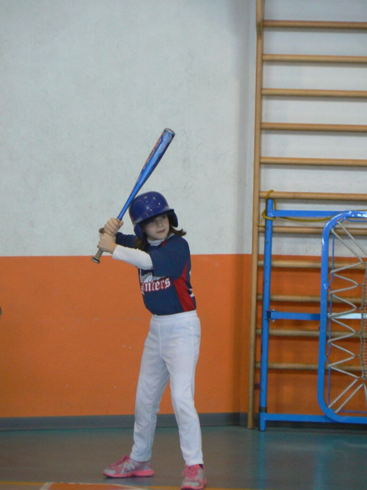

Domenica si sono svolte le fasi finali della Winter League Toscana 2017.
Il primo incontro, valido per l’accesso alle semifinali, ci vede impegnati contro la vincente tra Antella e Junio Firenze Reds. L’Antella riesce in mattinata a superare la squadra rossa fiorentina e quindi saranno i nostri rivali. L’obiettivo è semplice, vincere contro l’Antella, assicurarsi il quarto posto e giocarsi poi l’accesso alle finali contro il Padule. La partita inizia subito a favore nostro, la batteria Lopez lanciatore e Pellegrini ricevitore va alla grande con il pitcher lastrigiano che tiene a bada le mazze dell’Antella, le poche battute degli avversari vengono subito annullate da una difesa attenta. Tra tutti segnaliamo Paolo Manetti autore di una super prestazione.
In attacco le mazze finalmente suonano, eccome se suonano. A basi cariche Pellegrini fa partire una linea sulla destra con cui entrano due punti. La partita finirà con il risultato finale 6-2va nostro favore.
La partita successiva ci mette di fronte al Padule, l’inizio non è come ci si aspettava. Vuoi forse i troppi panini mangiati per pranzo, il cucciolo di Daniele Georges che sembrava una star sugli spalti o la presenza del vice-presidente Nerbini in panchina che pressava i nostri piccoli con la sua autorità.

In ogni caso la squadra sestese si dimostra più forte e porta casa la partita, i Lancers però non hanno rimpianti e i più piccoli festeggiano l’esordio in una partita ufficiale, Paoli Riccardo e Rrethatori Alessandro, entrambi classe 2009, dimostrano un gran carattere.
Il Padule vince nettamente e si aggiudica un posto in finale contro il Chianti, autore quest’ultimo di una super partita nella mattinata battendo il favorito Arezzo; il Team di San Casciano vincerà poi il torneo battendo anche il Padule in una partita spettacolare con ben due fuoricampi.
Ai nostri Lancers toccherà quindi riaffrontare l’Arezzo per potersi guadagnare il terzo posto. I coach Zalonici e Albano schierano la miglior formazione. Il sorteggio purtroppo ci vuole in trasferta e quindi si parte in attacco. Tuttavia lo spirito dei piccoli Lancers è ancora vivo, tale da sfoderare la migliore prestazione, riuscendo a impensierire seriamente la squadra Aretina. Il risultato finale è Arezzo 4 Lancers 3.
Nulla da recriminare, un paio di casi sfortunati ma è il Baseball. A fine partita qualche lacrima da parte dei piccolo Lancers, che dopo 3 partite in una sola giornata, speravano di arrivare sul podio. Un ottimo risultato con un gruppo praticamente nuovo, con qualche veterano che fa da collante per un mix perfetto, e la standing ovation a fine partita per i piccoli Lancers dimostra che il gruppo che si è creato è stupendo, con tanti genitori al seguito a fare un tifo caldissimo.
Un plauso particolare a Miguel Lopez, che sempre più si dimostra una colonna importante di questa società ed una persona sulla quale poter fare affidamento.